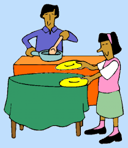
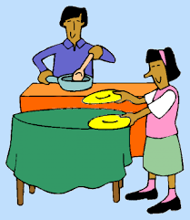

..........
This is a story that explains how adversity is met differently by different people. There was a girl named Asha who lived with her mother and father in a village. One day, her father assigned her a simple task. He took
three vessels filled with boiling water. He placed an egg in one vessel, a potato in the second vessel, and some tea leaves in the third vessel. He asked Asha to keep an eye on the vessels for about ten to fifteen minutes while the three
ingredients in three separate vessels boiled. After the said time, he asked Asha to peel the potato and egg, and strain the tea leaves. Asha was left puzzled – she understood her father was trying to explain her something, but she didn’t know
what it was.
Her father explained, “All three items were put in the same circumstances. See how they’ve responded differently.” He said that the potato turned soft, the egg turned hard, and the tea leaves changed the colour and taste of the water.
He further said, “We are all like one of these items. When adversity calls, we respond exactly the way they do. Now, are you a potato, an egg, or tea leaves?”

Moral.
We can choose how to respond to a difficult situation.


 
